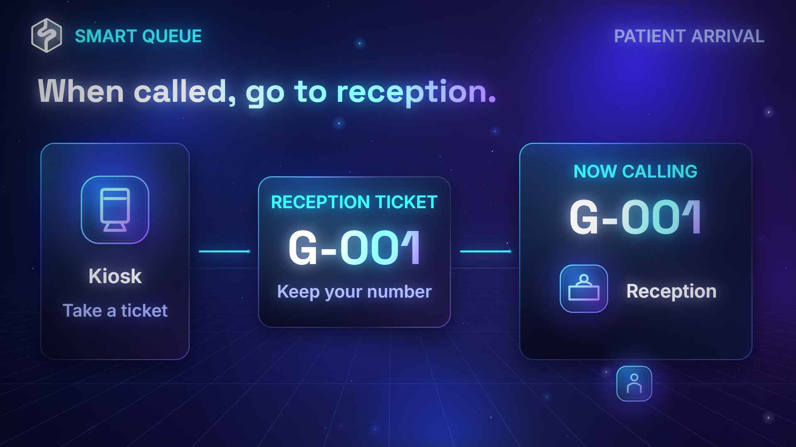
Muted loopTech Glow
1080pLuminous diagrams, flowing connections and bold typography. A focused, technical look for systems and digital products.
Review settings & copyThe story will use on-screen text and reading time.
Add any service by name. Keys stay in this computer's protected credential store and are excluded from copied choices. Saving a key does not test it or generate audio. Automatic generation needs a compatible API or connected tool; User-created music can come from Suno or any other service.
Settings apply to your next video. Style previews keep their original landscape format and audio.
Choose a style, then copy your video choices into chat.

Muted loopLuminous diagrams, flowing connections and bold typography. A focused, technical look for systems and digital products.
Review settings & copy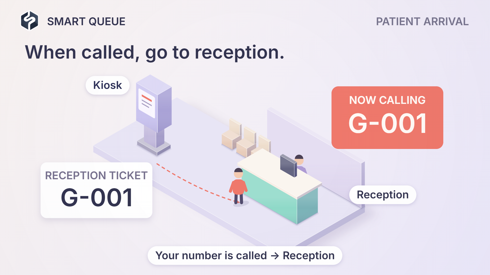
Muted loopSoft dimensional spaces, miniature people and a camera that follows the journey. A tangible look for places and processes.
Review settings & copy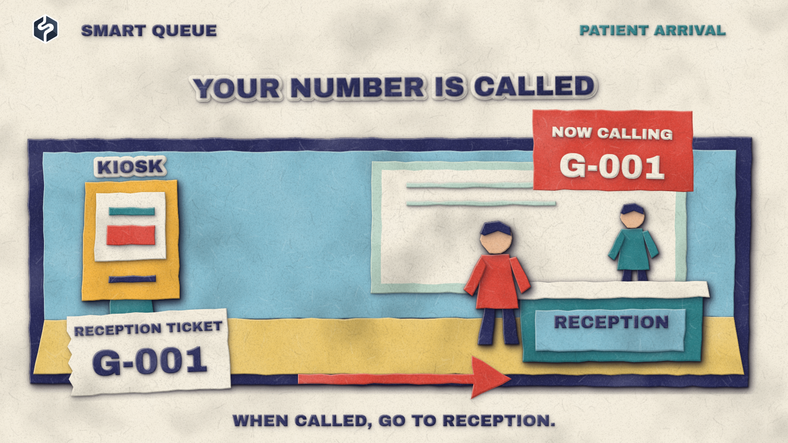
Muted loopLayered cardstock, textured cut lettering and tactile paper motion. A warm, handcrafted look for human journeys and step-by-step stories.
Review settings & copy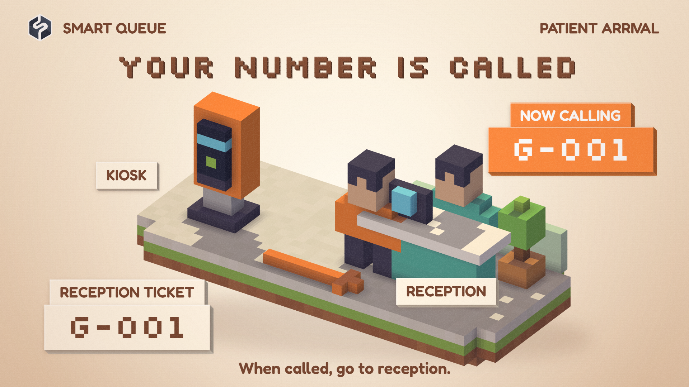
Muted loopA miniature world built from cubes, with dimensional shadows, falling blocks and pixel lettering. A playful, tangible look for journeys and systems.
Review settings & copy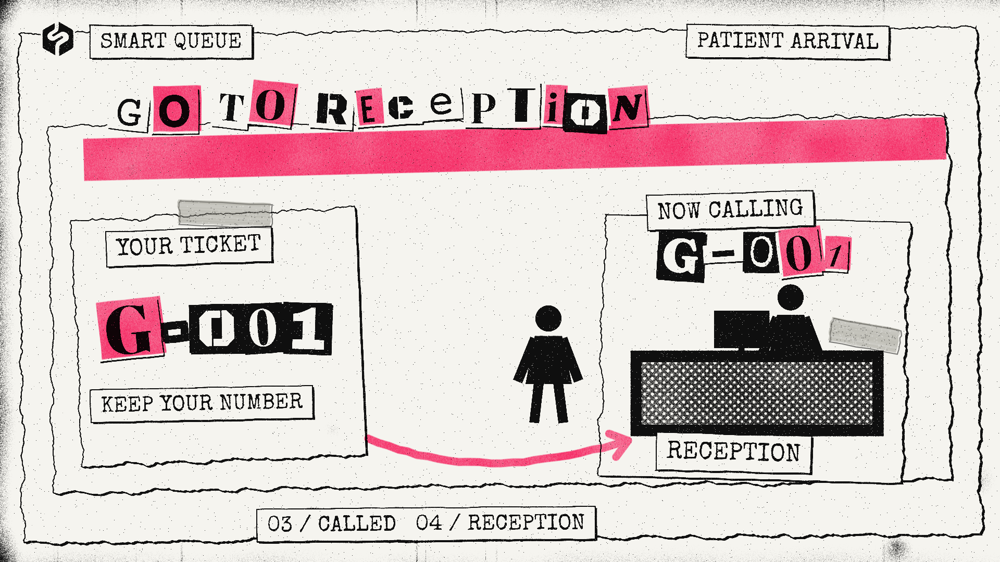
Muted loopTorn photocopies, ransom-note letters and fluorescent pink ink, with eight-fps stop motion. A raw editorial look for bold, energetic stories.
Review settings & copy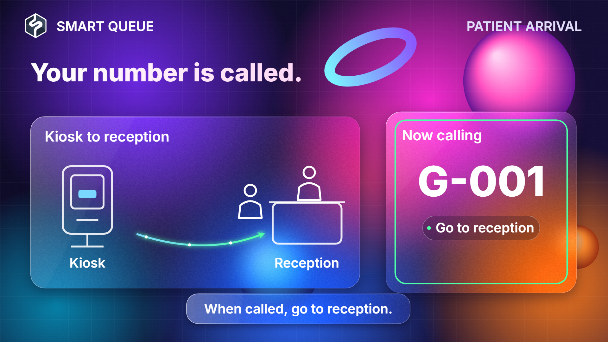
Muted loopLive backdrop blur, frosted panels and vivid drifting color. A polished interface look for digital services and connected journeys.
Review settings & copy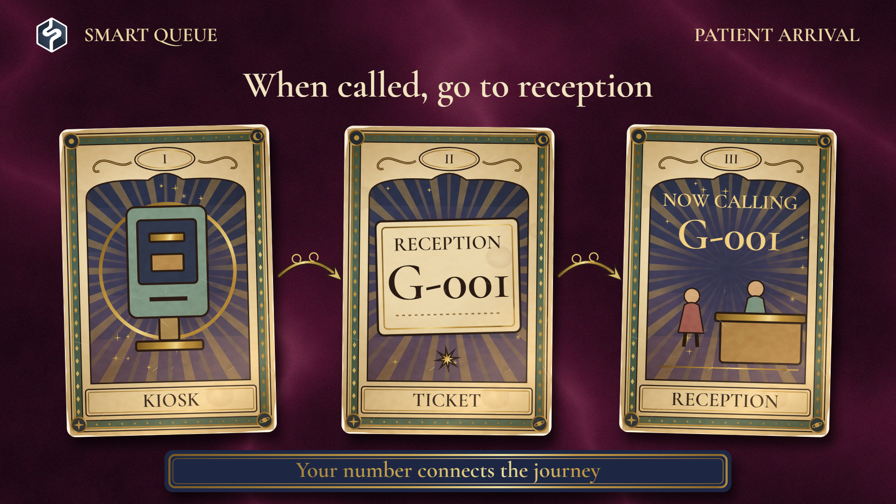
Muted loopAged illustrated cards, gold foil and velvet, with a journey revealed through card deals and flips. An ornate, symbolic look for stories and step-by-step explanations.
Review settings & copy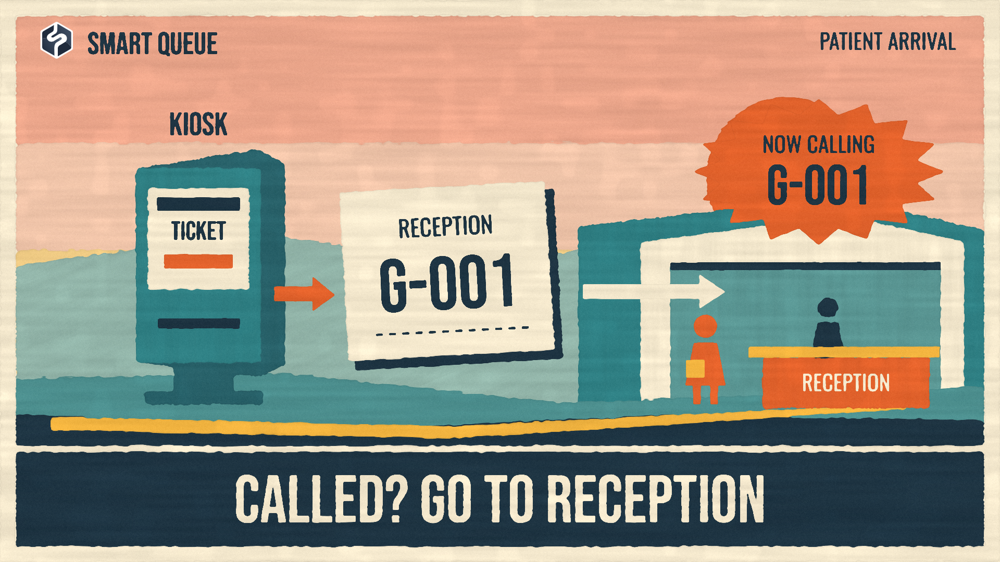
Muted loopMatte painted shapes, dry-brush edges and warm mid-century colors, with bold poster lettering. A tactile, welcoming look for places and journeys.
Review settings & copy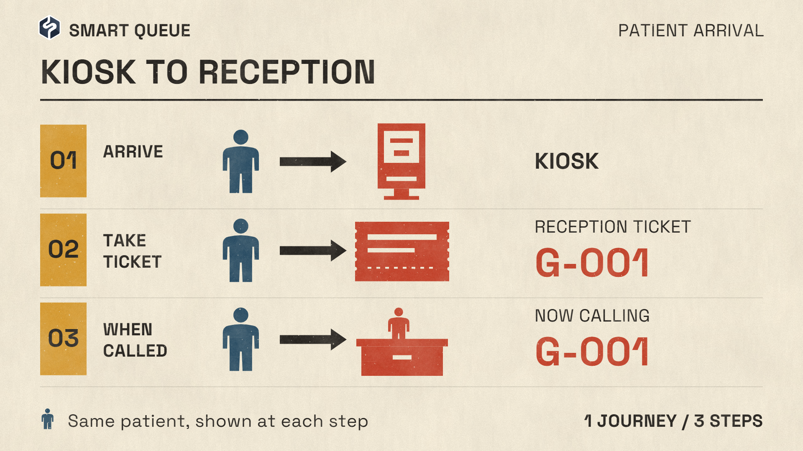
Muted loopFlat pictograms, ruled chart sheets and muted lithographic inks, with stepped stamp motion. A clear visual language for quantities, comparisons and process diagrams.
Review settings & copy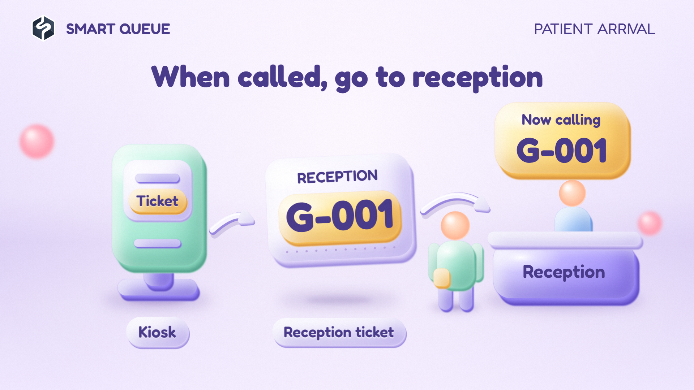
Muted loopPuffy pastel objects, rounded extrusions and soft contact shadows, with springy squash-and-stretch. A friendly dimensional look for services, products and journeys.
Review settings & copy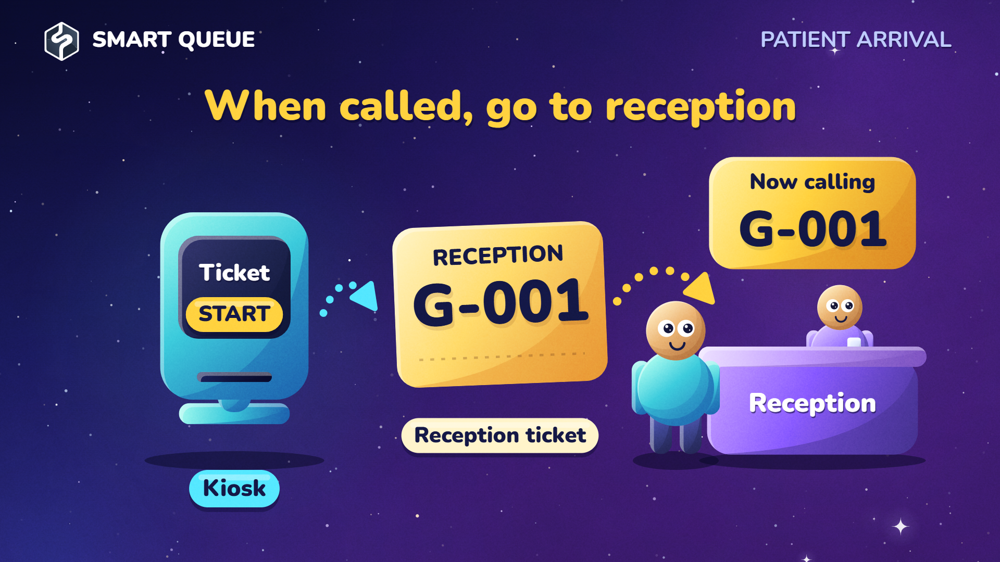
Muted loopDeep violet space, chunky gradient shapes and crescent shadows, with dotted arrows and smooth camera pullbacks. A lively look for ideas, systems and connected journeys.
Review settings & copy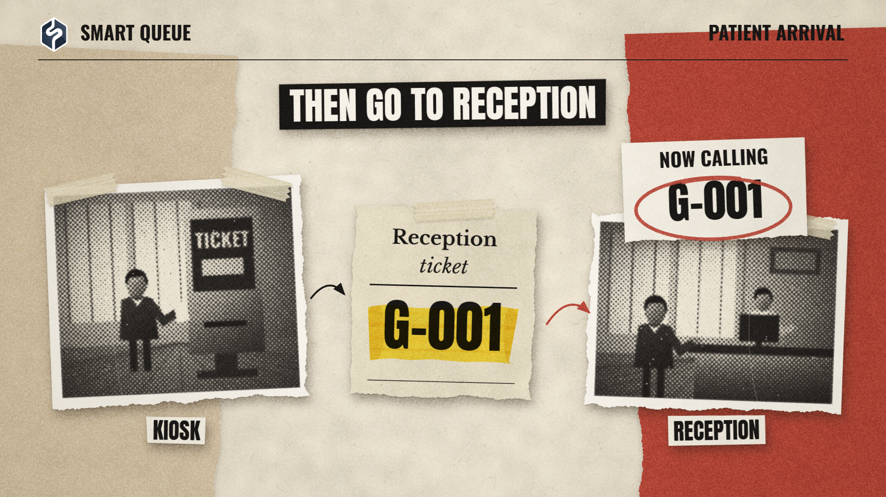
Muted loopTorn halftone prints, warm paper and condensed headlines, with masking tape, yellow highlights and red marker notes. A thoughtful editorial look for stories, evidence and processes.
Review settings & copy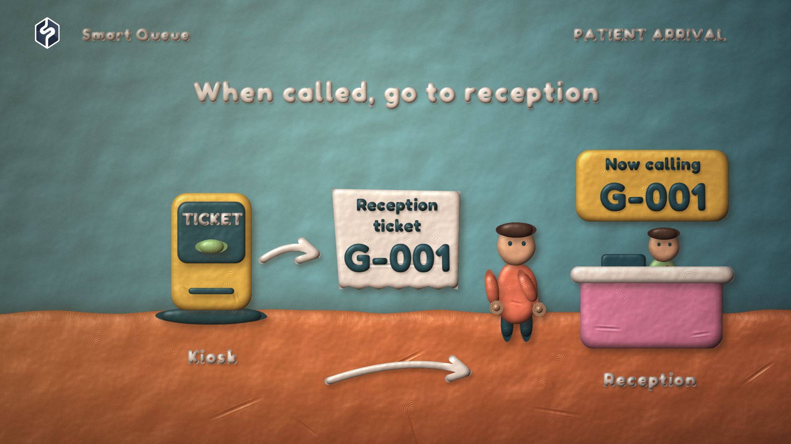
Muted loopHand-molded plasticine, visible thumbprints and waxy clay lettering on a sculpted teal-and-terracotta set. Stepped stop motion gives everyday journeys a tactile, handmade character.
Review settings & copy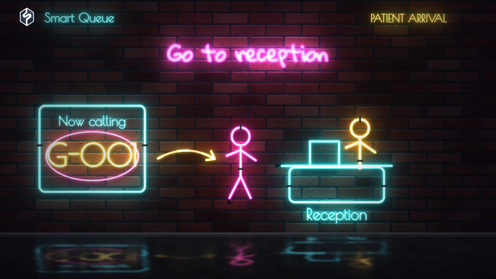
Muted loopHand-bent glass tubes on rain-darkened brick, with hot cores, vivid halos and shimmering pavement reflections. Signs buzz on as the camera travels along the wall.
Review settings & copy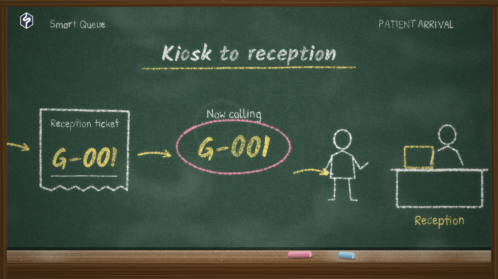
Muted loopDusty chalk diagrams and handwritten labels on green slate, with eraser traces, coloured emphasis and a worn oak tray. A chalk stick draws the lesson as the camera follows the board.
Review settings & copy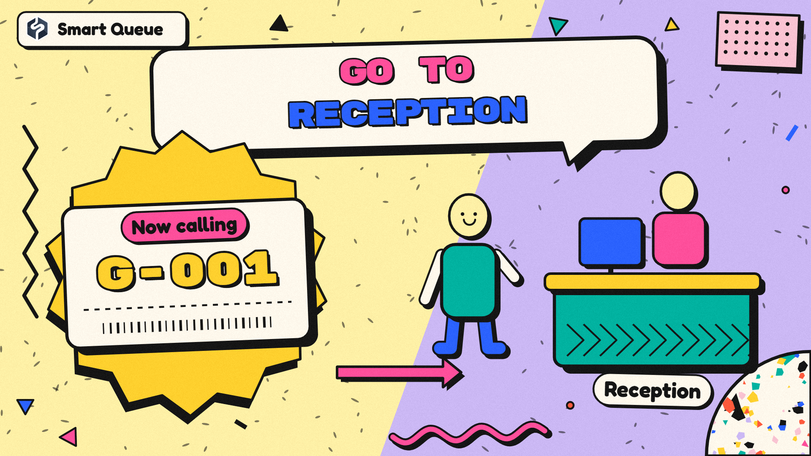
Muted loopClashing pastel grounds, bold outlines and hard shadows, with terrazzo chips, squiggles and chunky speech bubbles. Springy cutouts and striped polka-dot wipes turn each step into a playful graphic scene.
Review settings & copy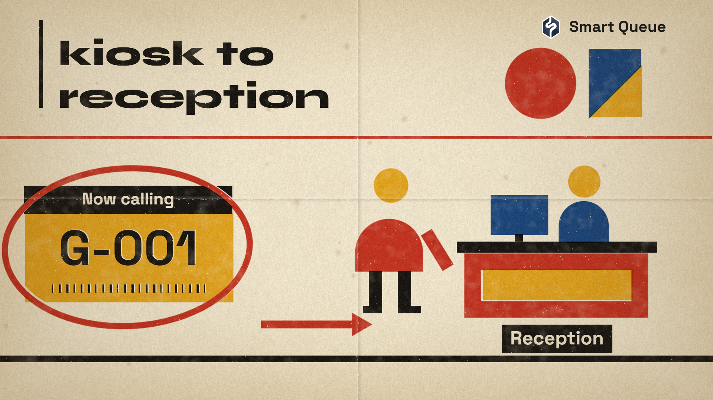
Muted loopPrimary-colour geometry and heavy geometric lettering on aged cream paper. Separate ink plates, imperfect registration and fold marks give a ruled, continuously tracked journey the character of a printed exhibition poster.
Review settings & copy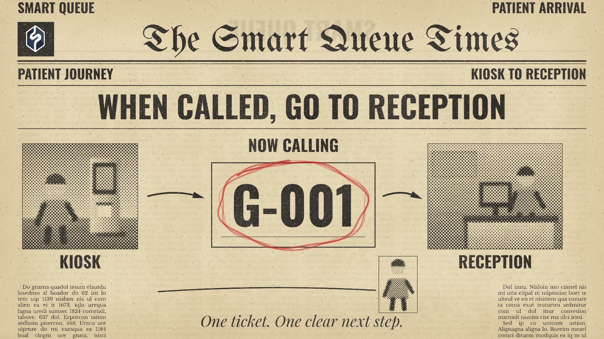
Muted loopA yellowed newspaper with a blackletter masthead, condensed headlines and coarse halftone illustrations. Uneven ink, reverse show-through, ruled diagrams and red pencil marks give the journey a printed broadsheet character.
Review settings & copyRepresentative shots rendered from the reusable style packs. Choices are remembered in this browser. Use Copy settings to clipboard, then paste into your chat.